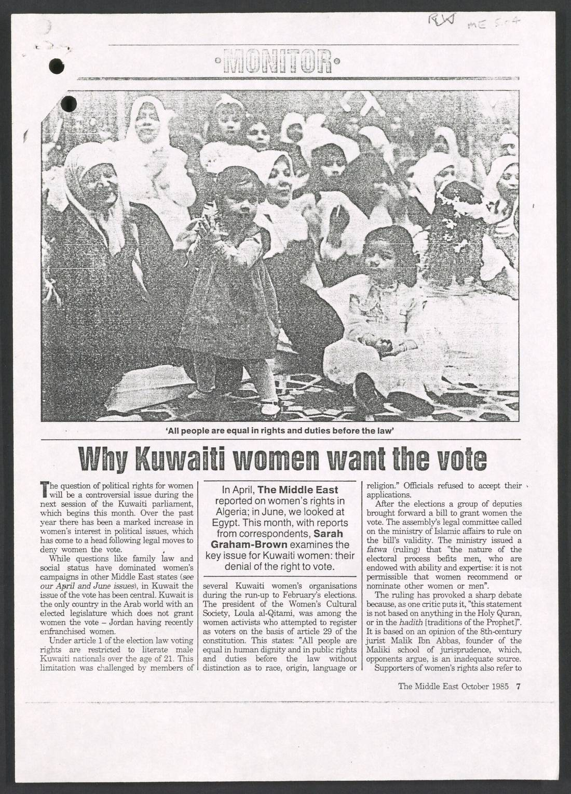

1986 · Article from a published newsletter on women in the Middle East, kept in a British file
Lolwa Al-Qatami and the women's vote, 1986
What it is
The article reports the debate in Kuwait over women's right to vote before the February elections, and names the president of the Women's Cultural Society, Loula al-Qitami, among the women who tried to register as voters under Article 29 of the Constitution.
Why it matters
Lolwa's campaign as reported outside Kuwait, two years after the 1984 attempt.
Who is meant
Identified by her role as chair of the Women's Cultural Society, which matches the family's record of her work. The record does not give her father's name.
Page copies

Original text
English translation
Notes
Only the sentence naming Lolwa is typed out, since this is a published article. The full page is in the scan.
Sources
The National Archives, London, digitised by the Arabian Gulf Digital Archive (agda.ae). Images reproduced by permission of The National Archives, London, England.
Archive reference
- FCO 8/6181 · Women in the UAE
How this text was made: Typed from the archive's own text reading of the scan, corrected against the scan where the reading was garbled. … marks text left out. Arabic translation by Claude; please review.
Open in the interactive site